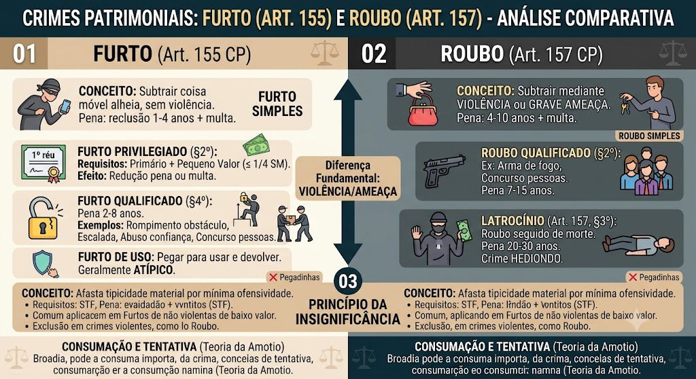

Análise dos crimes de furto (Art. 155) e roubo (Art. 157), com foco na diferença entre eles, consumação, tentativa, qualificadoras e privilégios.
Furto (Art. 155 do CP)
Subtrair, para si ou para outrem, coisa móvel alheia. Pena: reclusão de 1 a 4 anos + multa.
Bem jurídico: patrimônio.
Elemento subjetivo: dolo + intenção de assenhoramento definitivo (animus domini).
Se o agente é primário e a coisa é de pequeno valor, o juiz pode substituir a pena privativa de liberdade por restritiva de direitos, ou reduzir a pena de 1/3 a 2/3, ou aplicar somente a multa.
Requisitos cumulativos: primariedade + pequeno valor (STJ: valor não superior a 1/4 do salário mínimo).
Se o crime é cometido com:
- Destruição ou rompimento de obstáculo;
- Abuso de confiança;
- Escalada;
- Chave falsa;
- Concurso de duas ou mais pessoas.
Pena: reclusão de 2 a 8 anos + multa.
Furto qualificado pelo emprego de explosivo (§4º-A, incluído pela Lei 13.964/2019): reclusão de 4 a 10 anos + multa.
Quando o agente pega a coisa para usar e devolver, sem intenção definitiva de se apropriar. Em regra, não configura furto (ausência de animus domini).
Consumação: o furto consuma-se quando a coisa sai da esfera de vigilância da vítima, ainda que por pouco tempo (STF).
Tentativa: inicia a execução, mas não consegue concluir a subtração por circunstâncias alheias à sua vontade.
Roubo (Art. 157 do CP)
Subtrair coisa móvel alheia, para si ou para outrem, mediante violência ou grave ameaça à pessoa. Pena: reclusão de 4 a 10 anos + multa.
Bens jurídicos: patrimônio + integridade física + liberdade.
Diferença crucial para o furto: a violência ou ameaça.
Se o roubo é cometido com:
- Concurso de duas ou mais pessoas;
- Uso de arma de fogo (ou arma branca, mas o STJ entende que qualquer arma pode qualificar);
- Resultado de lesão corporal grave ou morte (latrocínio, §3º).
Pena: reclusão de 7 a 15 anos (para as qualificadoras do §2º) e de 20 a 30 anos para o latrocínio (§3º).
Roubo seguido de morte (homicídio doloso).
Pena: reclusão de 20 a 30 anos.
Natureza: crime hediondo.
Diferença para homicídio qualificado: no latrocínio, a morte é meio para subtração ou ocorre durante o roubo; no homicídio, a morte é o fim.
Tentativa de latrocínio: admite-se se a morte não ocorrer ou se a subtração não se consumar.
❌ 'No roubo, a violência ou ameaça pode ser posterior à subtração.' → ERRADO. Para ser roubo, a violência ou ameaça deve ser anterior ou concomitante à subtração, para garantir a impunidade ou a posse da coisa (art. 157, §1º, excepciona a violência posterior, mas ainda é roubo).
❌ 'O roubo privilegiado existe.' → NÃO. O roubo não tem privilégio, ao contrário do furto.
Princípio da Insignificância
É um critério de interpretação que afasta a tipicidade material quando a conduta é de mínima ofensividade, sem periculosidade social, com reduzido grau de reprovabilidade e inexpressiva lesão jurídica (STF).
Requisitos (STF):
- Mínima ofensividade;
- Nenhuma periculosidade social;
- Reduzido grau de reprovabilidade;
- Inexpressividade da lesão jurídica.
Efeito: o fato é atípico – não há crime.
Aplicação: é mais comum em furtos de pequeno valor, mas não se aplica a crimes violentos, nem a crimes contra a administração pública, nem a crimes militares (restritamente).
Material de estudo: Crimes Patrimoniais (Furto e Roubo)
Material complementar · Ver fonte no GitHub
Princípio da Insignificância
Mapa-mental
